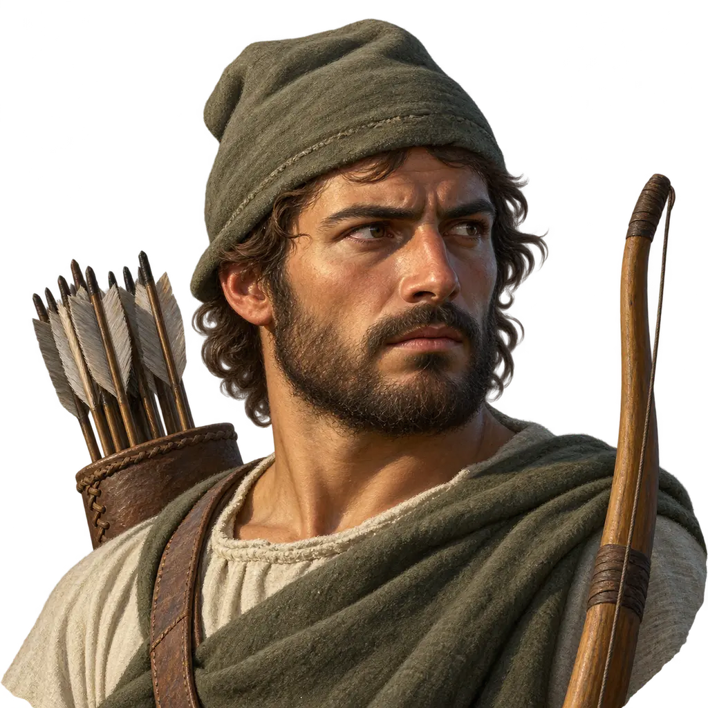
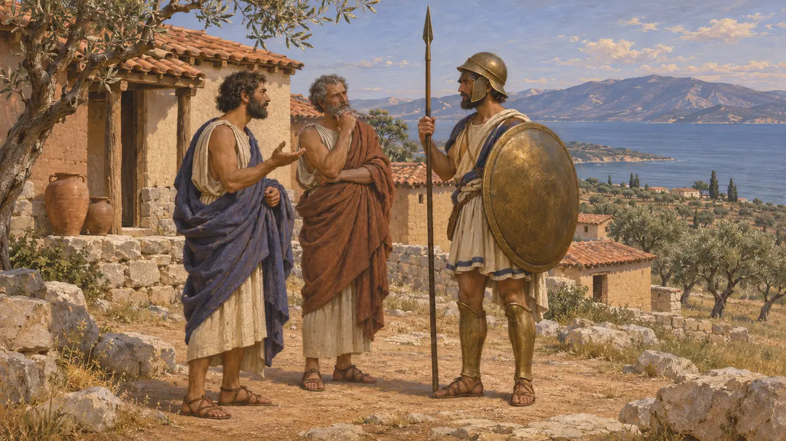
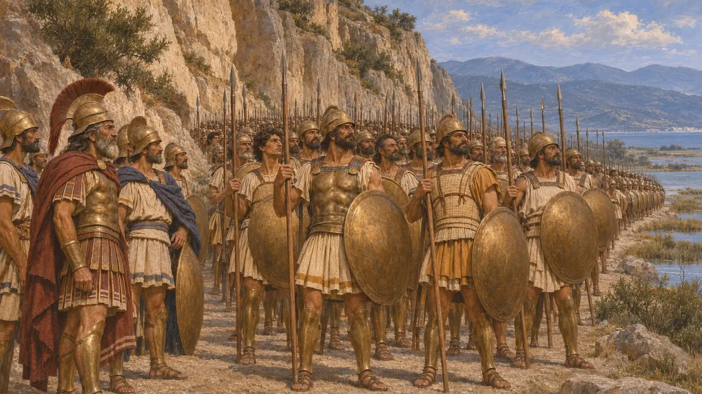
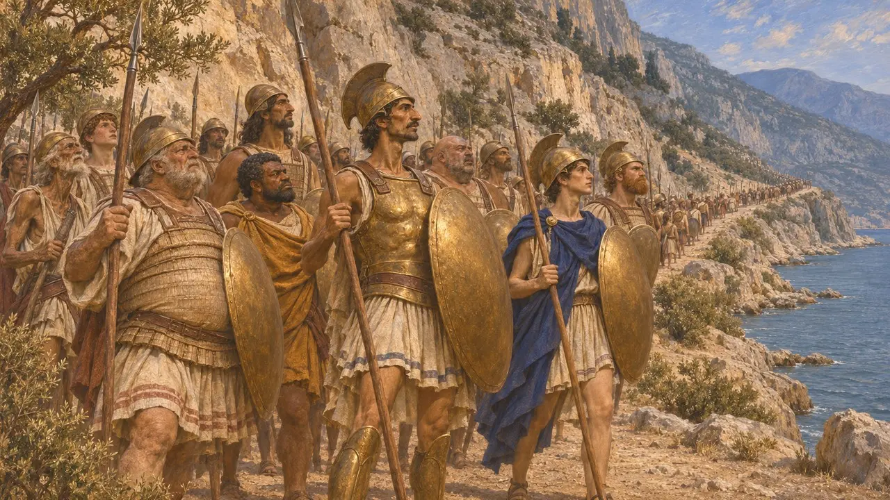
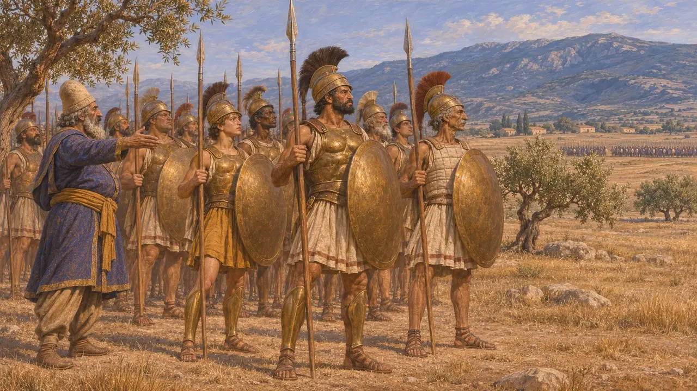
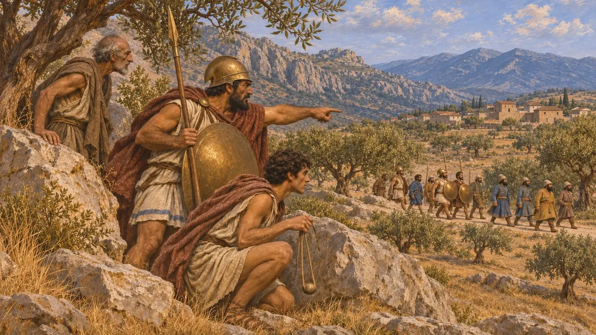

The Locrians
Greek people of central Greece at Thermopylae and Plataea, 480-479 BCE
In the game: Level 10: The Hot Gates, Level 11: The Finale
The Locrians of Opus lived on the mainland coast opposite Euboea, north-west of Boeotia. Herodotus places them with the Greeks at Thermopylae in 480 BCE and with Mardonius's Greek allies at Plataea in 479 BCE. Herodotus does not explain the change, but a Persian army on their land is the likely cause.
In the game: The game names the Locrians in the Chronicle, the decrees and the field briefings for Thermopylae and Plataea. They have no mechanic of their own beyond what those texts show.

Who the Locrians were
Ancient accountHerodotus speaks of the Locrians of Opus, who lived near the Euboean Gulf. Greek writers also knew a separate group, the Ozolian Locrians, farther west. The Opuntians are the Locrians of the Persian War texts used here.
Herodotus 7.203

At Thermopylae
Ancient accountHerodotus says the Locrians of Opus came to the pass in full force, and that a thousand Phocians came as well. They stood beside the Peloponnesian contingents led by the Spartan king Leonidas. Herodotus also lists Opuntian Locrians among the ships of the Greek fleet at Artemisium.
Herodotus 7.203

The size of the Locrian force
DisputedHerodotus gives no number for the Locrians, saying only that they came in full force. Later writers such as Diodorus give round figures for the Greek force at the pass, and these do not agree with one another. The Locrian numbers are therefore uncertain.
Herodotus 7.203

On the King's side
Ancient accountHerodotus lists Locrians among the peoples in Xerxes' land army. At Plataea Mardonius set Boeotians, Locrians, Malians, Thessalians and a thousand Phocians against the Athenians, Plataeans and Megarians. Herodotus does not set out their reasons. Modern historians generally infer that they yielded to a Persian army standing in central Greece.
Herodotus 9.31

A divided region
Ancient accountHerodotus says the Phocians resisted Xerxes for a time and that Phocians at Plataea were mostly with the Persian side, though some are said to have harassed it from the mountains. Locrians, Phocians and their neighbours therefore stood on both sides within a year. The surviving Persian sources say nothing about them.
Herodotus 8.30-32
Sources
- Herodotus 7.203
- Herodotus 9.31
- Herodotus 8.66
- Herodotus 8.30-32
- P. Briant, From Cyrus to Alexander, 2002